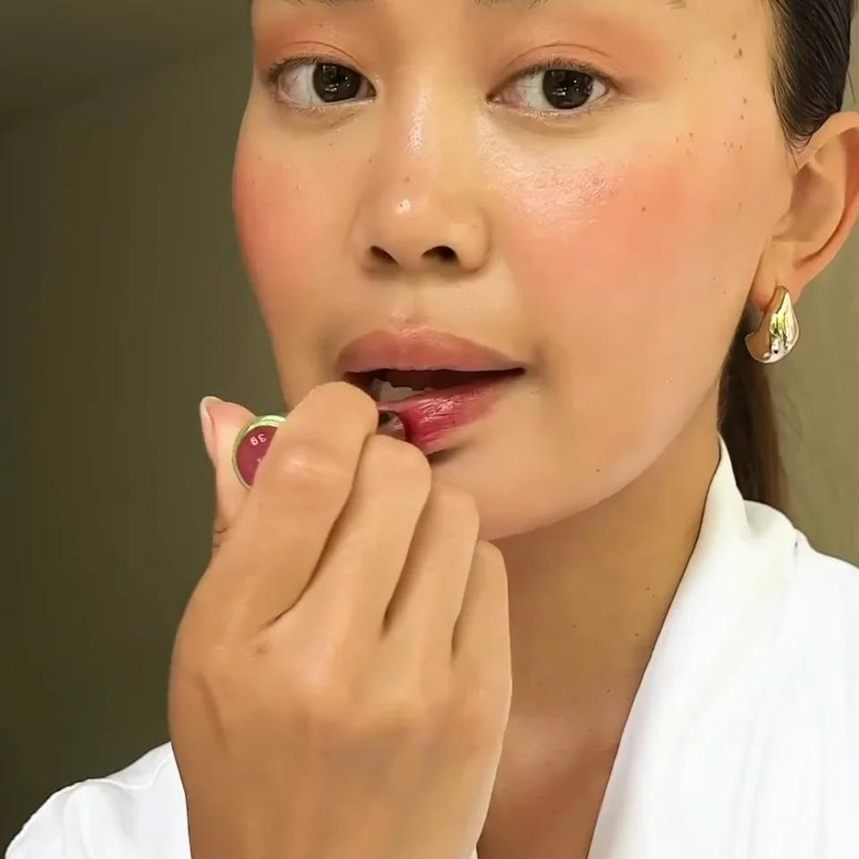

Sau Phun Môi Bao Lâu Được Đánh Son? Những Điều Bạn Cần Biết
Sau khi phun môi, nhiều khách hàng mong muốn nhanh chóng sử dụng son để gương mặt tươi tắn hơn. Tuy nhiên, việc đánh son quá sớm có thể ảnh hưởng đến quá trình hồi phục của môi và khiến màu môi lên không như mong muốn.
Vậy sau phun môi bao lâu được đánh son? Câu trả lời phụ thuộc vào tình trạng hồi phục của từng người và hướng dẫn từ kỹ thuật viên.
Sau Phun Môi Bao Lâu Có Thể Đánh Son?
Thông thường, bạn chỉ nên sử dụng son khi môi đã hồi phục hoàn toàn. Điều này có nghĩa là lớp bong đã hoàn tất, môi không còn nhạy cảm, không còn cảm giác căng rát và màu môi đã dần ổn định.
Thời gian hồi phục có thể khác nhau tùy cơ địa và cách chăm sóc. Nếu chưa chắc môi đã hồi phục hay chưa, bạn nên hỏi kỹ thuật viên trước khi sử dụng son.
Vì Sao Không Nên Đánh Son Quá Sớm?
Sau khi phun, môi cần thời gian để tái tạo. Nếu sử dụng son quá sớm, môi có thể dễ kích ứng, tăng nguy cơ nhiễm khuẩn nếu son không đảm bảo vệ sinh và ảnh hưởng đến quá trình hồi phục.
Vì vậy, nên ưu tiên để môi hồi phục tự nhiên trước, sau đó mới dùng son dưỡng hoặc son màu phù hợp.

Khi Nào Biết Môi Đã Hồi Phục?
Bạn có thể nhận biết qua các dấu hiệu: môi bong hoàn toàn, không còn khô rát, màu môi ổn định hơn và không còn cảm giác khó chịu khi ăn uống.
Nếu vẫn còn bong hoặc nhạy cảm, nên tiếp tục chăm sóc thay vì sử dụng son.
Nên Chọn Loại Son Nào?
Son dưỡng
Đây là lựa chọn phù hợp để giữ môi mềm, hạn chế khô môi và hỗ trợ bảo vệ môi sau khi đã hồi phục.
Son có thành phần dịu nhẹ
Nên lựa chọn sản phẩm có nguồn gốc rõ ràng, phù hợp với làn môi nhạy cảm và không gây cảm giác khô môi.
Hạn chế son kém chất lượng
Không nên sử dụng son trôi nổi, son hết hạn, son có mùi lạ hoặc biến đổi màu vì có thể làm môi bị kích ứng.
Có Cần Đánh Son Nếu Đã Phun Môi?
Không bắt buộc. Một trong những ưu điểm của phun môi là giúp môi có màu sắc tươi tắn ngay cả khi không trang điểm. Nhiều khách hàng chỉ sử dụng son dưỡng trong sinh hoạt hằng ngày.
Nếu muốn thay đổi phong cách hoặc màu sắc, bạn hoàn toàn có thể sử dụng son khi môi đã hồi phục.
Những Sai Lầm Thường Gặp
Đánh son ngay khi môi vừa bong
Nhiều người nghĩ rằng môi bong là có thể dùng son ngay. Tuy nhiên, sau khi bong xong, môi vẫn cần thêm thời gian để ổn định.
Dùng son lì liên tục
Một số loại son lì có thể khiến môi khô hơn. Bạn nên kết hợp son dưỡng để giữ môi mềm mại.
Không vệ sinh son
Đầu son tiếp xúc trực tiếp với môi. Việc giữ son sạch sẽ cũng góp phần hạn chế nguy cơ kích ứng.
Cách Giữ Màu Môi Đẹp Sau Khi Hồi Phục
Để màu môi duy trì lâu hơn, bạn nên dưỡng môi đều đặn, uống đủ nước, hạn chế liếm môi, bảo vệ môi khi ra nắng và lựa chọn mỹ phẩm chất lượng.
Checklist Sau Khi Phun Môi
Chờ môi hồi phục hoàn toàn trước khi đánh son.
Ưu tiên son dưỡng hoặc son có thành phần dịu nhẹ.
Không dùng son hết hạn, son trôi nổi hoặc có mùi lạ.
Giữ môi luôn đủ ẩm.
Tuân thủ hướng dẫn của kỹ thuật viên.
Câu Hỏi Thường Gặp
Có thể dùng son dưỡng ngay sau khi phun không?
Bạn nên sử dụng theo đúng hướng dẫn của kỹ thuật viên hoặc cơ sở thực hiện.
Sau khi bong hết có đánh son ngay được không?
Không phải lúc nào cũng nên ngay lập tức. Hãy đảm bảo môi đã hồi phục ổn định và không còn nhạy cảm.
Có cần đổi loại son sau khi phun môi?
Không bắt buộc, nhưng nên ưu tiên sản phẩm chất lượng, phù hợp với môi nhạy cảm.
Đã phun môi rồi có cần đánh son mỗi ngày không?
Không bắt buộc. Nhiều khách chỉ dùng son dưỡng vì màu môi sau phun đã đủ tươi cho sinh hoạt hằng ngày.
Kết Luận
Sau khi phun môi, việc lựa chọn đúng thời điểm để đánh son sẽ giúp môi hồi phục tốt hơn và giữ được màu đẹp lâu dài. Thay vì vội vàng sử dụng mỹ phẩm, hãy ưu tiên chăm sóc môi theo hướng dẫn và chỉ dùng son khi môi đã thực sự ổn định.